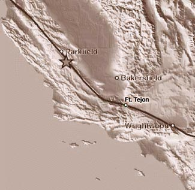

|
 |
 |
 |
|
The Great 1857 |
"Fort Tejon" Earthquake |
Shake, Rattle, and Roll |
by Aron J. Meltzner
Undergraduate Student, California Institute of Technology
and Research Fellow, U. S. Geological Survey
Originally published in the January, 1998 Fort Tejon Post Return |
| |
|  |
When
earthquake scientists, or seismologists, think about great
earthquakes in California in historic times, three in particular
stand out. The most recent "great" earthquake
to strike California was also the most famous: the 1906 " San
Francisco" earthquake, which (along with the fires
that followed) destroyed much of San Francisco and was
felt over most of California. Only thirty-four years earlier,
in 1872, Owens Valley in eastern California was rocked
by an earthquake that was felt over good portions of both
California and Nevada. And the largest earthquake to hit
Southern California in historic times occurred on January
9th, 1857, and it came to be known as the great " Fort
Tejon" earthquake, although such appellation could
be very misleading.
|
Fort Tejon, in fact,
was not the epicenter, nor was it even near the epicenter
of the earthquake. Surface rupture originated northwest
of Parkfield in Monterey County and propagated southeastward
for over 360 km (225 miles) along the San Andreas Fault
to the Cajon Pass northwest of San Bernardino. Technically,
Parkfield was the epicenter of this earthquake, as it was
the origin of the rupture, but most scientists would be
more concerned with the extent and location of the entire
rupture; Fort Tejon was approximately the midway point
of the rupture. The earthquake actually acquired its name
because Fort Tejon was the only populated locality near
the fault, and naturally, the Fort suffered more damage
than the rest of sparsely-populated 1857 Southern California.
In comparison to the other "great" earthquakes
of historic times, the 1857 "Fort Tejon" earthquake
was significantly larger than the 1872 Owens Valley (estimated
magnitude 7.8) quake, and was equally as large as, if not
larger than, the 1906 "San Francisco" earthquake
(estimated magnitude 7.9-8.0). Estimates for " Fort
Tejon" are also in the vicinity of magnitude 8.0.
The 1857 and 1906 events were both on the San Andreas Fault,
although the 1906 earthquake ruptured the northern segment
of the fault, from Hollister (San Benito Co.) northward,
for 400 km (250 miles). Duration of shaking, along the
fault, for both 1857 and 1906 is estimated to be as long
as two minutes.
In areas away from the fault, such as Los Angeles, San
Bernardino, and Santa Barbara, damage from 1857 was surprisingly
light, although it is unclear how modern high-rises would
respond to the long-period motion experienced at significant
distances from large earthquakes; high-rises may be more
susceptible to long-period ground motion than low buildings.
Fort Tejon, on the other hand, suffered considerable damage
from the mainshock, and it was battered by aftershocks
for months and years to come -- both a direct consequence
of the Fort's proximity to the fault. Two large aftershocks
(approximate magnitudes 6.0-6.5) occurred within a week
following the mainshock, which were felt over much of Southern
California, although aftershocks were still being felt
on a weekly basis at Fort Tejon over a year later. And
it is expected that if any other locations along or near
the fault (i.e., Wrightwood, Palmdale, Frazier Park, or
Taft) were populated back then, those locations would have
reported similar intensities during the mainshock to those
at Fort Tejon, and those locations could have experienced
just as many aftershocks.
The 1857 quake was the last so-called "Big One" in
Southern California, and a similar event will almost certainly
happen again in the future. Questions remain, however,
as to when it will occur, and whether the next "Big
One" will be as big as 1857. Los Angeles appears to
have fared well last time, but it remains unclear how modern
structures will respond in the future. It turns out that
for Los Angeles, San Bernardino, and Santa Barbara, blind
thrust faults and other local faults are a bigger risk
than the San Andreas Fault, simply because the former are
closer to the population centers and because we know less
about them, but for Fort Tejon, Palmdale, and other cities
along the San Andreas, the San Andreas remains the biggest
threat. Only by continued monitoring and research can we
hope to understand and reduce the seismic hazard over all
of Southern California. We can never prevent earthquakes,
but by knowing what may happen, we can prepare for them.
|
|
| |
|
| |
|
| |
|
| |
Here
is also an excerpt of an article that appeared in the Los Angeles
Star of May 30th, 1857, nearly five months after the mainshock.
Your readers may find it interesting:
"EARTHQUAKES. — It appears that old mother earth is
still troubled with the consequences of her great convulsion
of the 9th of January last. She has not yet recovered her quiet and
steady habits, but exhibits the weakness of her internals by
shakes, of almost nightly occurrence. Fort Tejon, seems to be the region
where her disease is located, for the good people of that Post,
are almost nightly entertained with earthquake shocks. Last week,
one or two very severe shocks occurred there, which awoke the
sleepers and sent them in a hurry to breathe the fresh air of the parade
ground...."
|
| |
|
| |
|
|
 |
|
 |
|
 |
|
 |
|
 |
|
 |
|
 |
|
 |
|
 |
|
 |
|
 |
|
 |
|
 |
|
 |
|
 |
|
 |
|
 |
|
 |
|
|